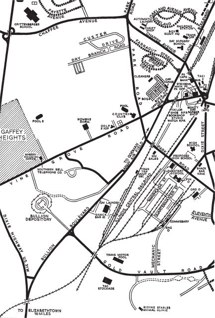

A TUG hooted on the river. Another answered. A flurry of engine noises receded.
Mr Jed Midnight, on Bond’s right, cleared his throat. He said emphatically, ‘Mister Gold, or whatever your name is, don’t you worry about definitions. A billion dollars is a lot of money whichever way you say it. Keep talking.’
Mr Solo raised slow black eyes and looked across the table at Goldfinger. He said, ‘Is very moch money, yess. But how moch your cut, mister?’
‘Five billion.’
Jack Strap from Las Vegas gave a short boisterous laugh. ‘Listen fellers, what’s a few billion between friends. If Mister – er – Whoosis can lead me to a billion dollars I’ll be glad to slip him a fin or even maybe a mega-fin for his trouble. Don’t let’s be small-minded about this, huh?’
Mr Helmut Springer tapped his monocle on the gold brick in front of him. Everyone looked towards him. ‘Mister – ah – Gold.’ It was the grave voice of the family lawyer. ‘These are big figures you mention. As I understand it, a total of some eleven billion dollars is involved.’
Mr Goldfinger said with precision, ‘The exact figure will be nearer fifteen billion. For convenience I referred only to the amounts I thought it would be possible for us to carry away.’
A sharp excited giggle came from Mr Billy Ring.
‘Quite, quite, Mr Gold.’ Mr Springer screwed his monocle back into his eye to observe Goldfinger’s reactions. ‘But quantities of bullion or currency to that amount are to be found gathered together in only three depositories in the United States. They are the Federal Mint in Washington, the Federal Reserve Bank in New York City, and Fort Knox in Kentucky. Do you intend that we should – er – “knock off” one of these? And if so which?’
‘Fort Knox.’
Amidst the chorus of groans, Mr Midnight said resignedly, ‘Mister, I never met any guy outside Hollywood that had what you’ve got. There it’s called “vision”. And vision, mister, is a talent for mistaking spots before the eyes for fabulous projects. You should have a talk with your head-shrinker or get yourself Miltownized.’ Mr Midnight shook his head sorrowfully. ‘Too bad. That billion sure felt good while I had it.’
Miss Pussy Galore said in a deep, bored voice, ‘Sorry mister, none of my set of bent pins could take that kind of piggy-bank.’ She made to get up.
Goldfinger said amiably, ‘Now hear me through, gentlemen and – er – madam. Your reaction was not unexpected. Let me put it this way: Fort Knox is a bank like any other bank. But it is a much bigger bank and its protective devices are correspondingly stronger and more ingenious. To penetrate them will require corresponding strength and ingenuity. That is the only novelty in my project – that it is a big one. Nothing else. Fort Knox is no more impregnable than other fortresses. No doubt we all thought the Brink organization was unbeatable until half a dozen determined men robbed a Brink armoured car of a million dollars back in 1950. It is impossible to escape from Sing Sing and yet men have found ways of escaping from it. No, no, gentlemen. Fort Knox is a myth like other myths. Shall I proceed to the plan?’
Billy Ring hissed through his teeth, like a Japanese, when he talked. He said harshly, ‘Listen, shamus, mebbe ya didn’t know it, but the Third Armoured is located at Fort Knox. If that’s a myth, why don’t the Russkis come and take the United States the next time they have a team over here playing ice-hockey?’
Goldfinger smiled thinly. ‘If I may correct you without weakening your case, Mr Ring, the following is the order of battle of the military units presently quartered at Fort Knox. Of the Third Armoured Division, there is only the Spearhead, but there are also the 6th Armoured Cavalry Regiment, the 15th Armour Group, the 160th Engineer Group and approximately half a division from all units of the United States Army currently going through the Armoured Replacement Training Centre and Military Human Research Unit No. 1. There is also a considerable body of men associated with Continental Armoured Command Board No. 2, the Army Maintenance Board and various activities connected with the Armoured Centre. In addition there is a police force consisting of twenty officers and some four hundred enlisted men. In short, out of a total population of some sixty thousand, approximately twenty thousand are combat troops of one sort or another.’
‘And who’s going to say boo to them?’ jeered Mr Jack Strap through his cigar. Without waiting for an answer he disgustedly tore the tattered stump out of his mouth and mashed it to fragments in the ash-tray.
Next to him Miss Pussy Galore sucked her teeth sharply with the incisiveness of a parrot spitting. She said, ‘Go buy yourself some better smokes, Jacko. That thing smells like burning wrestlers’ trunks.’
‘Shove it, Puss,’ said Mr Strap inelegantly.

Miss Galore was determined to have the last word. She said sweetly, ‘Know what, Jacko? I could go for a he-man like you. Matter of fact I wrote a song about you the other day. Care to hear its title? It’s called “If I had to do it all over again, I’d do it all over you”. ’
A bray of laughter came from Mr Midnight, a high giggle from Mr Ring. Goldfinger tapped lightly for order. He said patiently, ‘Now hear me through, please, gentlemen.’ He got up and walked to the blackboard and pulled a roll map down over it. It was a detailed town map of Fort Knox including the Godman Army Airfield and the roads and railway tracks leading into the town. The committee members on the right of the table swivelled their chairs. Goldfinger pointed to the Bullion Depository. It was down on the left-hand corner enclosed in a triangle formed by the Dixie Highway, Bullion Boulevard and Vine Grove Road. Goldfinger said, ‘I will show you a detailed plan of the depository in just a moment.’ He paused. ‘Now, gentlemen, allow me to point out the main features of this fairly straightforward township. Here –’ he ran his finger from the top centre of the map down through the town and out beyond the Bullion Depository–‘runs the line of the Illinois Central Railroad from Louisville, thirty-five miles to the north, through the town and on to Elizabethtown eighteen miles to the south. We are not concerned with Brandenburg Station in the centre of the town, but with this complex of sidings adjoining the Bullion Vault. That is one of the loading and unloading bays for the bullion from the Mint in Washington. Other methods of transport to the vault, which are varied in no particular rotation for security reasons, are by truck convoy down the Dixie Highway or by freight plane to Godman Airfield. As you can see, the vault is isolated from these routes and stands alone without any natural cover whatsoever in the centre of approximately fifty acres of grassland. Only one road leads to the vault, a fifty-yard driveway through heavily armed gates on Bullion Boulevard. Once inside the armoured stockade, the trucks proceed on to this circular road which runs round the vault to the rear entrance where the bullion is unloaded. That circular road, gentlemen, is manufactured out of steel plates or flaps. These plates are on hinges and in an emergency the entire steel surface of the road can be raised hydraulically to create a second internal stockade of steel. Not so obvious to the eye, but known to me, is that an underground delivery tunnel runs below the plain between Bullion Boulevard and Vine Grove Road. This serves as an additional means of access to the vault through steel doors that lead from the wall of the tunnel to the first sub-ground floor of the depository.’
Goldfinger paused and stood away from the map. He looked round the table. ‘All right, gentlemen. There is the vault and those are the main approaches to it with the exception of its front door which is purely an entrance to the reception hall and offices. Any questions?’
There were none. All eyes were on Goldfinger, waiting. Once again the authority of his words had gripped them. This man seemed to know more about the secrets of Fort Knox than had ever been released to the outside world.
Goldfinger turned back to the blackboard and pulled down a second map over the first. This was the detailed plan of the Gold Vault. Goldfinger said, ‘Well, gentlemen, you can see that this is an immensely solid two-storey building somewhat like a square, two-layered cake. You will notice that the roof has been stepped for bomb protection, and you will observe the four pill boxes on the ground at the four corners. These are of steel and are connected with the interior of the building. The exterior dimensions of the vault are a hundred and five by a hundred and twenty-one feet. The height from ground level is forty-two feet. The construction is of Tennessee granite, steel-lined. The exact constituents are: sixteen thousand cubic feet of granite, four thousand cubic yards of concrete, seven hundred and fifty tons of reinforcing steel and seven hundred and sixty tons of structural steel. Right? Now, within the building, there is a two-storey steel and concrete vault divided into compartments. The vault door weighs more than twenty tons and the casing of the vault is of steel plates, steel I-beams and steel cylinders laced with hoopbands and encased in concrete. The roof is of similar construction and is independent of the roof of the building. A corridor encircles the vault at both levels and gives access both to the vault and to the offices and storerooms that are housed in the outer wall of the building. No one person is entrusted with the combination to the door of the vault. Various senior members of the depository staff must separately dial combinations known only to each of them. Naturally the building is equipped with the latest and finest protective devices. There is a strong guard-post within the building and immensely powerful reinforcements are at all times available from the Armoured Centre less than a mile distant. Do you follow me? Now, as to the actual contents of the vault – these amount, as I said earlier, to some fifteen billion dollars’ worth of standard mint bars one thousand fine. Each bar is double the size of the one before you and contains four hundred Troy ounces, the avoirdupois weight being some twenty-seven and a half pounds. These are stored without wrappings in the compartments of the vault.’ Goldfinger glanced round the table. ‘And that, gentlemen and madam,’ he concluded flatly, ‘is all I can tell you, and all I think we need to know, about the nature and contents of Fort Knox Depository. Unless there are any questions at this stage, I will proceed to a brief explanation of how this depository may be penetrated and its contents seized.’
There was silence. The eyes round the table were rapt, intent. Nervously, Mr Jack Strap took a medium-sized cigar out of his vest pocket and stuffed it in the corner of his mouth.
Pussy Galore said sternly, ‘If you set fire to that thing I swear I’ll kayo you with my gold brick.’ She took a threatening hold of the bar.
‘Take it easy, kid,’ said Mr Strap out of the corner of his mouth.
Mr Jed Midnight commented decisively, ‘Mister, if you can heist that joint, you got yourself a summum cum laude. Go ahead and tell. This is either a bust or the Crime de la Crime.’
Goldfinger said indifferently, ‘Very well, gentlemen. You shall hear the plan.’ He paused and looked carefully round the table and into each pair of eyes in turn. ‘But I hope you understand that total security must now prevail. What I have said so far, if repeated, would be taken for the maunderings of a lunatic. What I am about to say will involve all of us in the greatest peace-time conspiracy in the history of the United States. May I take it that we are all bound by an oath of absolute secrecy?’
Almost instinctively, Bond watched the eyes of Mr Helmut Springer from Detroit. While affirmatives in various tones of voice came from the others, Mr Springer veiled his eyes. His portentous ‘You have my solemn word’ rang hollow. To Bond, the candour was as false as a second-hand motor salesman’s. Casually he drew a short straight minus line beside Mr Springer’s name on the agenda.
‘Very well then.’ Goldfinger returned to his seat at the table. He sat down, picked up his pencil and began talking to it in a thoughtful, conversational voice. ‘First, and in some ways most difficult, is the question of disposal. One billion dollars of gold bullion weighs approximately one thousand tons. To transport this amount would require one hundred ten-ton trucks or some twenty six-wheel heavy industry road transporters. I recommend the latter vehicles. I have a list of the charter companies who hire out this type of vehicle and I recommend that, if we are to be partners, you should proceed immediately after this meeting to contracting with the relevant companies in your territories. For obvious reasons you will all wish to engage your own drivers and this I must leave in your hands. No doubt’ – Mr Goldfinger allowed himself the ghost of a smile – ‘the Teamsters’ Union will prove a fruitful source for reliable men and you will perhaps consider recruiting ex-drivers from the Negro Red Ball Express that served the American armies during the war. However, these are details requiring exact planning and co-ordination. There will also be a traffic control problem and no doubt you will make arrangements among yourselves for sharing out the available roads. Transport aircraft will be a subsidiary source of mobility and arrangements will be made to keep open the north–south runway on the Godman Airfield. Your subsequent disposal of the bullion will, of course, be your own affair. For my part’ – Goldfinger looked coolly round the table – ‘I shall initially be using the railroad and, since I have a bulkier transport problem, I trust you will allow me to reserve this means of egress for my own.’ Goldfinger did not wait for comment. He continued in an even tone: ‘Compared with this problem of transport, the other arrangements will be relatively simple. To begin with, on D – 1, I propose to put the entire population, military and civilian, of Fort Knox temporarily out of action. Exact arrangements have been made and only await my signal. Briefly, the town is supplied with all drinking and other water-supplies by two wells and two filter plants yielding just under seven million gallons per day. These are under the control of the Post Engineer. This gentleman has been pleased to accept a visit from the Superintendent and Deputy Superintendent of the Tokyo Municipal Waterworks who wish to study the workings of a plant of this size for installation in a new suburb planned for the environs of Tokyo. The Post Engineer has been much flattered by this request and the Japanese gentlemen will be accorded all facilities. These two gentlemen, who are, of course, members of my staff, will be carrying on their persons relatively small quantities of a highly concentrated opiate devised by the German chemical warfare experts for just this purpose during the last war. This substance disseminates rapidly through a volume of water of this magnitude, and, in its consequent highly diluted form, has the effect of instant but temporary narcosis of any person drinking half a tumbler of the infected water. The symptoms are a deep and instant sleep from which the victim awakens much refreshed in approximately three days. Gentlemen –’ Goldfinger held out one hand palm upwards – ‘in the month of June in Kentucky I consider it out of the question that a single resident is able to go through twenty-four hours without consuming half a glass of water. There may perhaps be a handful of confirmed alcoholics on their feet on D-Day, but I anticipate that we shall enter a town in which virtually the entire population has fallen into a deep sleep where they stand.’
‘What was that fairy-tale?’ Miss Galore’s eyes were shining with the vision.
‘Puss in Boots,’ said Mr Jack Strap in a surly voice. ‘Go ahead, mister. This is good. How do we get into the town?’
‘We come in,’ said Goldfinger, ‘on a special train that will have left New York City on the night of D – 1. There will be approximately one hundred of us and we shall be attired as Red Cross workers. Miss Galore will, I hope, provide the necessary contingent of nurses. It is to fill this minor but important role that she has been invited to this meeting.’
Miss Galore said enthusiastically, ‘Wilco, Roger, over and out! My girls’ll look sweet in starch. Whaddya say, Jacko?’ She leant sideways and nudged Mr Strap in the ribs.
‘I say they’d look better in cement overcoats,’ said Mr Strap impatiently. ‘Whaddya have to keep on butting in for? Keep going, mister.’
‘At Louisville, thirty-five miles from Fort Knox, I myself and an assistant will ask to be allowed to ride in the leading diesel. We shall have delicate instruments. We shall say that it will be necessary for us to sample the air as we approach Fort Knox for, by this time, news of the mysterious affliction that has struck down the inhabitants will have reached the outer world and there is likely to be some panic in the surrounding area, and indeed in the country as a whole. Rescue planes may be expected to approach shortly after our arrival at dawn and an early task will be to man the control tower at Godman Airfield, declare the base closed and re-route all planes to Louisville. But, to go back for a moment, shortly after leaving Louisville, my assistant and I will dispose of the driver and fireman by as humane methods as are possible’ (I bet, thought Bond) ‘and I shall personally bring the train – I may say that I have the requisite knowledge of these locomotives – through Fort Knox to the bullion sidings alongside the depository.’ Goldfinger paused. He looked with slow, grave eyes round the circle. Satisfied with what he saw, he continued in the same even tone. ‘By this time, gentlemen and madam, your transport convoys should be arriving. The traffic controller will dispose them in the neighbourhood of the depository according to a pre-arranged plan, the airport staff will proceed by truck to Godman Airfield and take over, and we shall enter the depository, paying no heed to the sleeping bodies with which the landscape will be – er – decorated. Right?’
Mr Solo’s dark eyes burned across the table. He said softly, ‘Sure, is right so far. Now mebbe you –’ he blew out his cheeks and gave a quick hard puff towards Goldfinger – ‘like this and the twenty-ton door he fall down. Yes?’
‘Yes,’ said Goldfinger equably. ‘Almost exactly like that.’ He rose and went to the table under the blackboard, lifted up the big ungainly carton and carried it carefully back and placed it on the table in front of him. It seemed to be very heavy.
He sat down and continued, ‘While ten of my trained assistants are making preparations for the vault to be opened, stretcher teams will enter the depository and remove to safety as many of the inmates as can be located.’ Bond thought he noticed a treacherous purr underlying Goldfinger’s next words. ‘I am sure you will all agree, gentlemen and madam, that all unnecessary loss of life should be avoided. Thus far, I hope you notice that there have been no casualties with the exception of two employees of the Illinois Central Railroad who have received sore heads.’ Goldfinger didn’t wait for comment but went on. ‘Now,’ he reached out and placed his hand on the carton, ‘when you, gentlemen, and your associates have needed weapons, other than the conventional small arms, where have you found them? At military establishments, gentlemen. You have purchased sub-machine guns and other heavy equipment from quartermaster storekeepers at near-by military bases. You have achieved this by the use of pressure, blackmail or money. I have done the same. Only one weapon would be powerful enough to blast open the Bullion Vault at Fort Knox and I obtained one, after much seeking, from a certain allied military base in Germany. It cost me exactly one million dollars. This, gentlemen, is an atomic warhead designed for use with the Corporal Intermediate Range Guided Missile.’
‘Cheesus Kerist.’ Jed Midnight’s hands reached for the edge of the table beside Bond and gripped it.
All the faces round the table were pale. Bond could feel the skin taut over his own tensed jaw. To break his tension he reached inside his coat pocket for the Chesterfields and lit one. He slowly blew out the flame and put the lighter back in his pocket. God Almighty! What had he got himself into? Bond looked back down the vista of his knowledge of Goldfinger. The first meeting with the naked brown body on the roof of the Floridiana Cabana Club. The casual way he had rapped Goldfinger’s knuckles. The interview with M. The meeting at the bank at which it had been a question of tracking down a gold smuggler – admittedly a big one and one who worked for the Russians – but still only a man-sized criminal, someone Bond had taken trouble to beat at golf and then had pursued coolly, efficiently, but still as only one more quarry like so many others. And now! Now it was not a rabbit in the rabbit hole, not even a fox, it was a king cobra – the biggest, most deadly inhabitant of the world! Bond sighed wearily. Once more into the breach, dear friends! This time it really was St George and the dragon. And St George had better get a move on and do something before the dragon hatched the little dragon’s egg he was now nesting so confidently. Bond smiled tautly. Do what? What in God’s name was there he could do?
Goldfinger held up his hand. ‘Gentlemen and madam, believe me, this object is an entirely harmless lump of machinery. It is not armed. If I hit it with a hammer it would not explode. Nothing can make it explode until it is armed and that will not happen until The Day.’
Mr Billy Ring’s pale face was shiny with sweat. The words trembled slightly as they hissed out through the false grin. ‘Mister, what ... what about this thing they call – er – fall-out?’
‘Fall-out will be minimal, Mr Ring, and extremely localized. This is the latest model – the so-called “clean” atomic bomb. But protection suits will be issued to the squad that first enters the ruins of the building. They will form the first in the human chain that will remove the gold and pass it to the waiting trucks.’
‘Flying debris, Mister? Chunks of concrete and steel and so forth?’ Mr Midnight’s voice came from somewhere in his stomach.
‘We shall take shelter behind the outer steel stockade of the depository, Mr Midnight. All personnel will wear earplugs. There may be minor damage to some of the trucks, but that hazard must be accepted.’
‘Da sleeping guys?’ Mr Solo’s eyes were greedy. ‘Mebbe dey jess sleeps a liddle longer?’ Mr Solo obviously didn’t worry too much about the sleeping guys.
‘We shall move as many as possible to safety. We must, I am afraid, accept minor damage to the town. I estimate that casualties among the population will approximately equal three days’ toll on the roads of Fort Knox. Our operation will merely serve to keep road accident statistics at a steady level.’
‘Damn nice of us.’ Mr Midnight’s nerves had now recovered.
‘Any more questions?’ Goldfinger’s voice was bland. He had read out the figures, estimated the prospects for the business. Now it was time to put the meeting to the vote. ‘Details remain to be worked out exactly. In that, my staff here’ – he turned first to Bond and then to Miss Masterton – ‘will be assisting me. This room will be our operations room to which you will all have access by day or by night. The code word for the project is “Operation Grand Slam”, which will always be used in referring to the project. May I suggest that those of you who wish to participate should brief one, and only one, of your most trusted lieutenants. Other staff can be trained for their functions as if this were a run-of-the-mill bank robbery. On D – 1 a slightly wider briefing of staff will be necessary. I know I can rely on you, gentlemen and madam, if you decide to participate, to treat this whole project as an operation of war. Inefficiency or insecurity will of course have to be dealt with decisively. And now, gentlemen and madam, I will ask you to reply on behalf of your respective organizations. Which of you wishes to enter this race? The prize is gigantic. The risks are minimal. Mr Midnight?’ Goldfinger turned his head an inch to the right. Bond saw the wide open X-ray gaze devour his neighbour. ‘Yes?’ There was a pause. ‘Or no?’